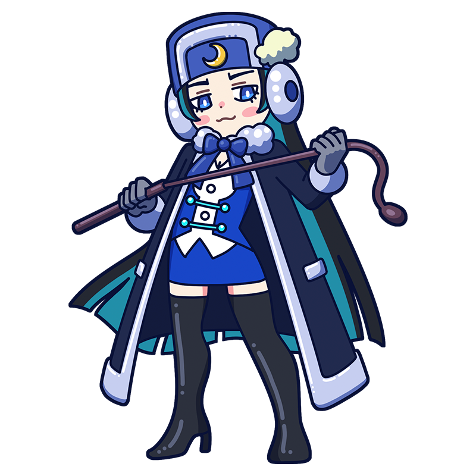

ワタクシとの思い出を、
忘れられないようにしてあげるわ！
そ～れ、ボリショイ、ボリショイ！
クラムスコイ
雪降る町で思い出す
忘れられない、ムチのアジ
移動派のミューズ。各地を移動して回るサーカスに所属する獣使いで、ライオンやトラを調教するのが得意。しかし手頃な獣が見つからないときは、虐めてほしがっている変わり者の男性に鞭を振るっているらしい…。
様式
移動派
出身国
ロシア帝国
代表作
- 『忘れえぬ女』
- 『荒野のイエス・キリスト』
- 『月明かりの夜』など
クラムスコイといえばこの一枚！
忘れえぬ女
クラムスコイの作品の中でも特に有名な一作。原題は「見知らぬ女」といった意味で、『忘れえぬ女』は来日した際に付けられた呼び名である。雪の積もる町並みを馬車で行く女性の眼差しには、得も言われぬ気品が漂う。しかし発表当初は評価が芳しくなく、娼婦を描いた絵とまで酷評された。その後、時代を経て少しずつ評価を高め、今ではロシア美術を代表する肖像画のひとつとなっている。
制作年
1883年
技法・材質
油彩、キャンバス
寸法
75.5 cm x 99 cm
所蔵
トレチャコフ美術館
(ロシア)
作品画像出典: https://commons.wikimedia.org/wiki/File:Kramskoy_Portrait_of_a_Woman.jpg
クラムスコイってどんな芸術家？
イワン・クラムスコイ
ロシアの移動派を代表する画家の一人。学生時代に美術アカデミーの保守的な方針に反旗を翻して退学処分となった後、仲間とともに立ち上げたグループ「移動派」の中心メンバーとして各地で活動し、ロシアを代表する肖像画家となった。トルストイやシーシキン、トレチャコフなど、同時代の著名人を数多く描いている。卓越した描写力で捉えた表情や眼差しには、その人物の思慮深さや内面までも映し出されているかのようだ。
フルネーム
Ivan Nikolayevich Kramskoi
誕生
1837年6月8日
死没
1887年4月5日(49歳没)